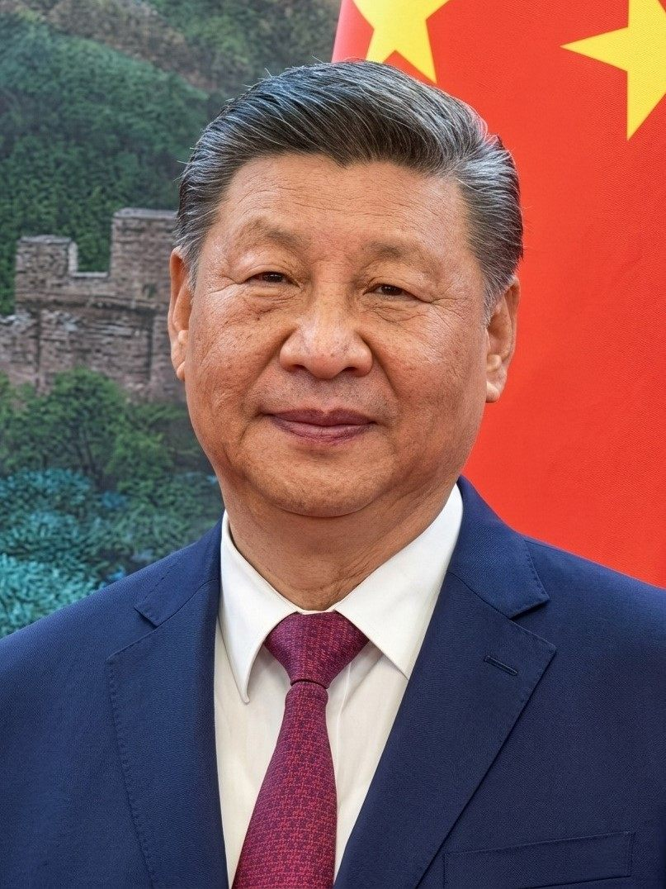

시진핑, 벨라루스 대통령 회견… 전방위 협력 ‘심화’ 합의
시진핑 중국 국가주석이 벨라루스 대통령 루카셴코와 회견하고 경제·무역·인문 등 전방위 협력을 심화하기로 했다. 양국은 다자주의와 개발도상국 연대의 중요성에 공감했다.
마약란 기자 · 2026.06.30
橋중국

환구망(環球網)·인민망(人民網)에 따르면 시진핑 주석은 방중한 벨라루스 대통령 알렉산드르 루카셴코와 만나 양국 관계와 실질 협력 방안을 논의했다.
광고 문의 · 300×250양측은 무역·투자, 농업, 과학기술, 인적 교류 등 분야에서 협력을 확대하기로 했다. 중국은 ‘일대일로’ 틀 안에서 호혜적 사업을 이어가겠다는 입장을 밝혔다.
다자주의와 연대
회견에서 양국은 국제 질서의 안정과 다자주의 강화의 중요성을 강조했다. 보호무역과 일방주의가 확산하는 국면에서 개발도상국 간 협력의 의미를 부각했다.
중국은 벨라루스와의 협력을 ‘상호 존중과 호혜’의 원칙 위에서 추진한다고 설명했다. 양국은 고위급 교류를 정례화해 신뢰를 다지기로 했다.
경제 협력의 결
농산물 교역 확대와 물류 연계, 산업·기술 협력 등이 구체적 의제로 거론됐다. 내륙 입지의 벨라루스로서는 중국 시장과 물류망 접근이 중요한 기회다.
양국 기업 간 투자와 합작 사업도 논의 대상이 됐다. 협력의 실질 성과는 후속 이행과 사업화 속도에 달려 있다.
제3의 시각
華橋時報는 외교 회담을 어느 진영의 승패가 아니라 ‘무엇을 합의했고 무엇이 남았는가’의 관점에서 전한다. 국가 간 협력은 선언에서 출발해 사업과 교류로 완성되며, 우리는 그 과정을 사실 위주로 차분히 기록한다.
출처·참고 (사실 확인용 — 본문은 직접 재작성)
· 環球網 (huanqiu.com)
· 人民網 (people.com.cn)
· 環球網 (huanqiu.com)
· 人民網 (people.com.cn)